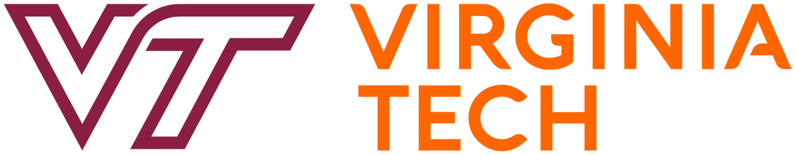
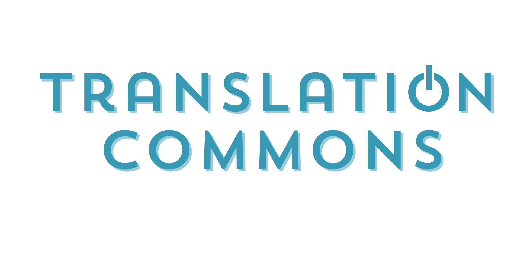
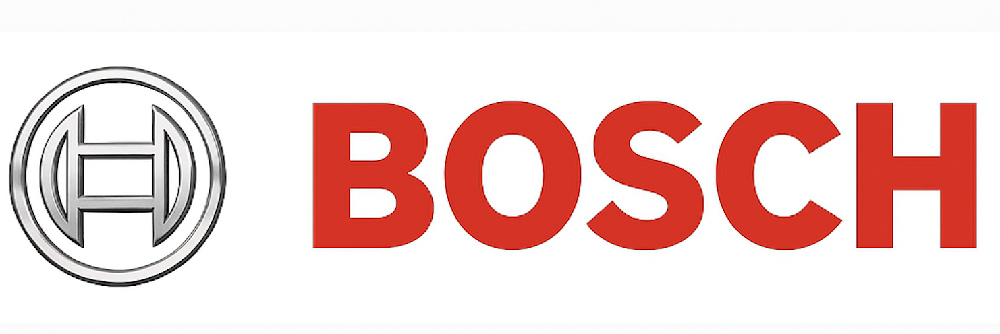

Pranav Vishwanatham
Software Engineer
I recently completed my Master’s in Computer Science from Virginia Tech, building on a prior Master’s in Software Engineering. You might wonder, why two master’s degrees? My first gave me a strong theoretical foundation in software development. But as I gained real-world experience, I realized I wanted to strengthen my programming skills and dive deeper into fields like web development, HCI, machine learning, and AI. That curiosity and drive led me back to school and I’ve never looked back.
I’m passionate about developing, testing, and integrating software across a range of domains, whether it’s automotive systems, embedded platforms, full-stack web applications, or intelligent AI/ML solutions. I enjoy crafting code that’s not just functional but impactful, with a focus on performance, reliability, and user experience.
When I’m not working, you’ll likely find me on a long drive, fueled by my love for automobiles. I’m an avid motorsport enthusiast, Formula 1 is my go-to. I enjoy exploring cars and their tech, gaming in sim racing tuning setups and touring simulators with semi-trucks, and keeping up with the latest in the auto world.
And I've been told I bring focus, enthusiasm, and a sharp eye for detail, qualities that thrive in teams driven by purpose and vision.
- From: Hyderabad, India
- Lives In: Houston, Texas
- Age: 26
- Gender: Male
My Skills
Coding
- Python
- C/C++
- / HTML/CSS
- JavaScript
Domains
- 🚗 Automotive Controls Software
- 🔌 Embedded Systems
- 🧠 ML / AI
- 🌐 Full-Stack Web Development
Automotive Software Skills
- Model-Based Development
- AUTOSAR
- V-Model
- Automotive SPICE
- Functional Safety (ISO-26262)
- SIL/HIL Testing
Tools
- Matlab/Simulink
- ETAS ASCET
- Jira
- Git
- Jenkins
- DOORS
What have I been upto?
Education
-
2023 - 2024
Masters in Computer Science and Applications
Virginia Tech
Blacksburg, Virginia
GPA: 3.87
Coursework: Data Analytics, Advanced Machine Learning, Fundamentals of Information Security, Software Design Quality, Web Application Development, Information Visualization, Usability Engineering and Social Media Analytics.
-
2016 - 2021
M.Tech in Software Engineering (Integrated)
Vellore Institute of Technology (VIT University)
Vellore, India
CGPA: 8.09/10
Accomplishments: Coordinated and executed engaging events of Rotaract Club at VIT, driving community impact and fostering teamwork among 40+ volunteers; managed procurement in Purchase Committee for Riviera 2019, optimizing vendor relationships and achieving cost savings.
Experience
-
2025 - Present
Volunteer Software Developer
Translation Commons
United States (Remote)-
Collaborating with the global nonprofit Translation Commons to support the development of the new World Atlas of Languages (WAL) website, an initiative by UNESCO that visualizes and preserves linguistic diversity across the globe.
-
Assisting in data collection and structuring of global language datasets from authoritative sources such as CLDR, Ethnologue, and Glottolog.
-
Contributing to the platform’s technical infrastructure and GitHub organization setup to streamline development workflows, project management, and open-source collaboration across multiple initiatives within the organization.
-
-
2021 - 2022
Associate Software Engineer
Bosch Global Software Technologies
Hyderabad, India-
Contributed to the development of safety-critical braking functions ECUs under Chassis Controls Division for Volkswagen Group vehicles, including Electronic Stability Program (ESP) and Integrated Power Brake (IPB) systems.
-
Focused on application software (ASW) for functions such as Cooperative Regenerative Braking (CRB), Driver Brake Request (DBR) and Sensor Signal Processing(SSP) across models like Audi PPE, Porsche Panamera, and VW Crafter.
-
Delivered customer-specific software features by analyzing system requirements, defining functional requirements, and implementing model-based solutions in accordance with V-Model SDLC, AUTOSAR architecture, Automotive SPICE processes. ISO 26262 functional safety standards and MISRA-C coding guidelines .
-
Led activities across the full development cycle, including software design, auto code generation in C, unit testing, Software-in-the-loop(SIL), Hardware-in-the-loop(HIL) simulation testing, and integration validation to ensure defect-free, production-ready software.
-
Promoted to Function Owner within six months for CRB and DBR functions—coordinating team efforts, improving delivery quality, and reducing defect leakage by 10% while increasing customer satisfaction by 20%.
-
Recognized with the Best Newcomer Award for consistently delivering high-quality work and demonstrating strong ownership and technical leadership.
-
-
2020 - 2021
Software Engineering Intern
Robert Bosch Engineering and Business Solutions Private Limited
Hyderabad, India-
Developed the Automated Resource Optimizer tool to enhance performance and reduce RAM/ROM usage in ESP braking system ECU software by identifying inefficiencies in resource allocation.
-
Automated Complete Software (CSW) build executions with dynamic parameter tuning using Python scripts integrated into the Jenkins CI/CD pipeline, generating memory usage metrics. Followed this by flashing the software and executing Lab Car automated testing scripts to collect runtime performance data.
-
Integrated Python scripts into the pipeline to generate CSV files and HTML reports with visual graphs, enabling better analysis of resource utilization trends.
-
Applied machine learning algorithms to predict optimal configurations, achieving a 10% reduction in resource consumption and improving system responsiveness.
-
Deployed the final solution with a Python (Tkinter) and MongoDB, delivering a user-friendly and scalable optimization tool.
-
Demonstrated strong ownership and performance, leading to a full-time offer as an Associate Software Engineer within the same team.
-
Intrests
What can I do?
Software Development
Automotive Safety-Critical Software
AI/ML
Web Design
Projects